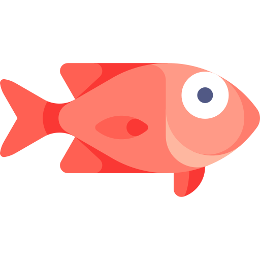

A flashy, native macOS Redfish client with first-class templates for Dell iDRAC 9. Monitor and control your servers — health, power, thermals, storage, RAID and more — from one beautiful, multi-tab dashboard.
Generic Redfish under the hood, with rich Dell iDRAC 9 templates layered on top.
Connect to several BMCs at once, each in its own live tab. Save servers with passwords kept in the macOS Keychain — never on disk.
Hero health banner, stat tiles, radial gauges and a streaming power-trend chart that refreshes automatically.
Temperature and fan charts, per-sensor thresholds, PSU output, voltages, efficiency, and a capacity-aware power cap.
Controllers, virtual disks and physical drives — detect the PERC, create or delete virtual disks, and blink a drive's locate LED.
Network adapters down to per-port link, speed and MAC, plus pluggable transceiver details (SFP+/SFP28/QSFP, optic vs. DAC, vendor/part/serial).
Identify LED, one-time or persistent boot override, asset tag and power cap — applied over Redfish with instant feedback.
Mount and eject a remote ISO/IMG over HTTP/HTTPS/CIFS to boot from — right from the app.
Open the iDRAC HTML5 console in an embedded window or your browser, or hand off to macOS Screen Sharing over VNC.
Registry-driven editing with proper dropdowns, integer bounds and validation, grouped by BIOS menu — staged for the next reboot.
Configure the SNMP agent, community, trap destinations, and the physical location iDRAC reports (data center / rack / slot).
Browse the SEL with severity filtering and search to triage hardware events fast.
Firmware & identity, Service Tag → Express Service Code, a direct Dell support link, and a subsystem health rollup.
A signed, notarized .app served directly — no App Store required.
Universal build for Apple Silicon and Intel. Requires macOS 14 (Sonoma) or later.
Snapper.zip./Applications folder.Found a bug or want a feature? It all happens on GitHub.
Bugs, crashes or unexpected behaviour against your iDRAC — open a ticket and we'll take a look.
Open an issueHave a Redfish endpoint or Dell capability you'd love to see? Suggestions are welcome.
Browse issuesSnapper is built with SwiftUI. Browse the code, build it yourself, or read the README.
View repository